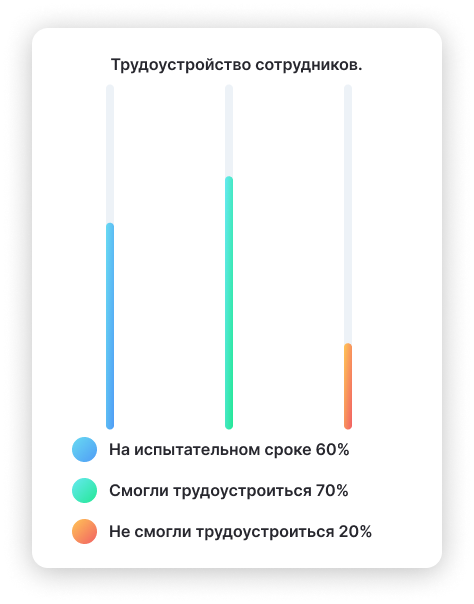
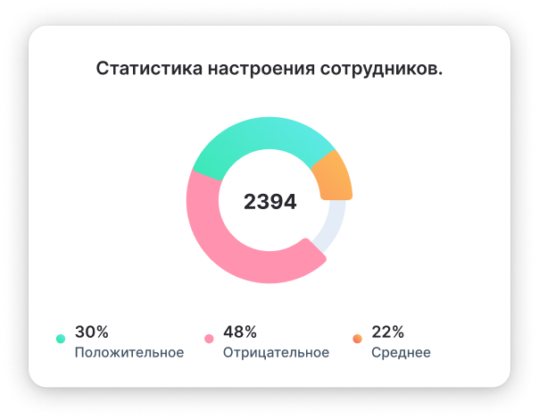
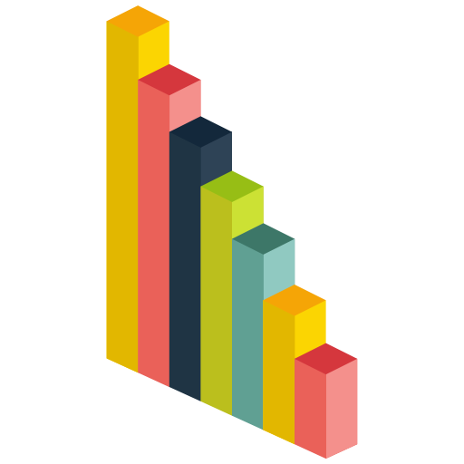

Инновационная платформа для HR-ориентированных решений
Оптимизируйте процесс управления человеческими ресурсами с помощью нашей многофункциональной платформы. Мы предлагаем инструменты для подбора, обучения и развития сотрудников, а также аналитику для улучшения корпоративной культуры. Упрощайте работу вашего HR-отдела и создавайте сильную команду уже сегодня!
Статистика и аналитика - важные составляющие работы HR-специалиста
Аналитика данных компании помогает выбирать правильную стратегию развития и работы. Мы понимаем, как HR-специалисту важно быть в курсе всех событий. Поэтому мы автоматизировали этот процесс, добавив раздел статистики в Hurma. Система автоматически собирает данные и формирует графики и диаграммы. Вам остается только выбрать нужный период, посмотреть и проанализировать результаты.
Так как все сотрудники и кандидаты находятся в одной системе, Hurma автоматически собирает статистику по HR, рекрутингу и настроению. Вам больше не нужно вести множество разных таблиц или экспортировать данные из разных сервисов, ведь вся статистика доступна в системе. Вам достаточно зайти в соответствующий раздел и выбрать период, за который вы хотите увидеть статистику. Все остальное произойдет автоматически.
Автоматический сбор статистики – лучшее, что может случиться с вашими HR-процессами
Подключиться

Умный подбор персонала
Наша платформа использует передовые технологии, чтобы упростить процесс подбора кандидатов. Получите доступ к интеллектуальным алгоритмам, которые помогают быстро находить и оценивать лучших кандидатов, а также автоматизировать повторяющиеся задачи, позволяя HR-специалистам сосредоточиться на стратегических инициативах.
Аналитика и оптимизация HR-процессов
Используйте мощные инструменты аналитики для оценки эффективности процессов управления персоналом. Наша платформа предоставляет глубокие аналитические отчеты, которые помогают выявлять слабые места, отслеживать производительность сотрудников и принимать обоснованные решения для улучшения корпоративной культуры и повышения вовлеченности команды.


Умный подбор персонала
Наша платформа использует передовые технологии, чтобы упростить процесс подбора кандидатов. Получите доступ к интеллектуальным алгоритмам, которые помогают быстро находить и оценивать лучших кандидатов, а также автоматизировать повторяющиеся задачи, позволяя HR-специалистам сосредоточиться на стратегических инициативах.
Тратьте время с пользой!
Подключиться
Преимущества
- данные собираются автоматически;
- HR, рекрутинг и настроение в одном разделе;
- можно смотреть статистику за разное время;
- понятные диаграммы и графики;
- детальная статистика по рекрутингу;
- статистика по настроению с комментариями;
- статистика по текучести кадров.
Вся статистика в одной системе
Аналитика – один из важных аспектов работы HR и рекрутера. Чтобы понять, работает ли новая стратегия по повышению лояльности, нужно собрать статистику. Чтобы понять, как работают новые методы по снижению текучести, нужно собрать статистику. Чтобы понять, какой канал рекрутинга самый эффективный, снова нужно собрать статистику. И у HR-менеджера, и у рекрутера достаточно много ежедневных задач, поэтому на сбор статистики и аналитику данных часто попросту нет времени.
Развернуть